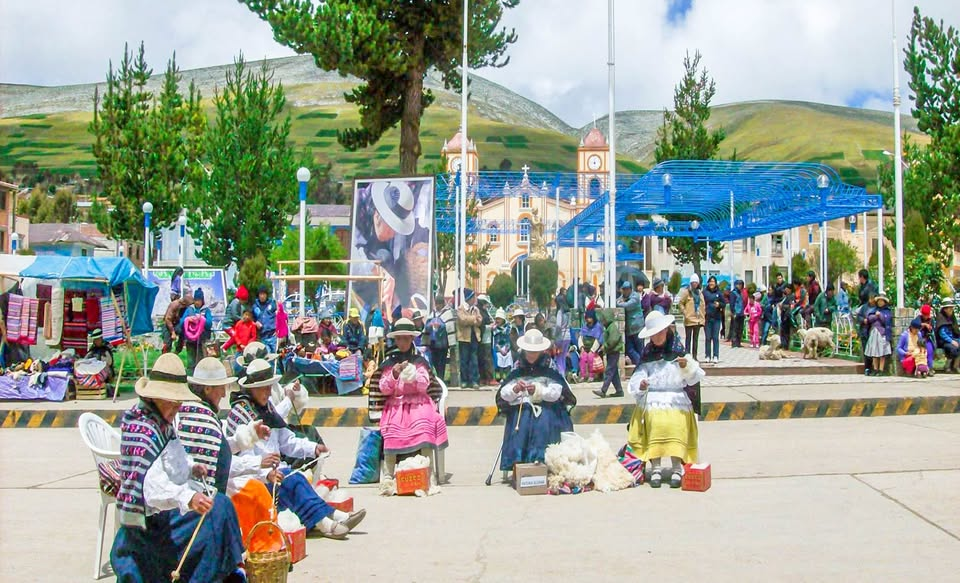

Artesanía textil
Visita a las artesanas, mira el hilado con puchca y el tejido de la manta Huashacata o Catarana, y recorre las exposiciones de tapices. En Semana Santa cada barrio expone lo mejor de su arte en la salida del Cristo Resucitado.